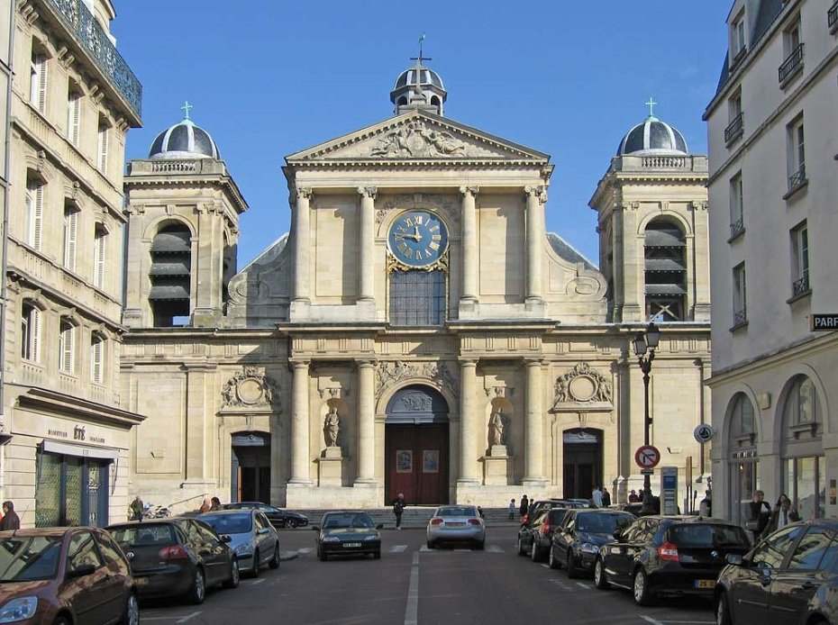
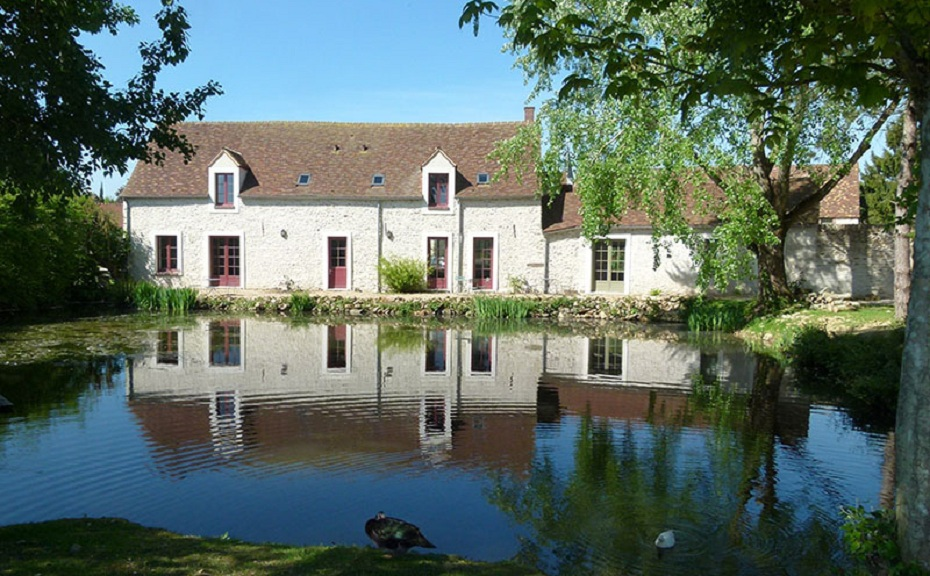

- Accueil
- •
- Nous 2
- •
- Nos témoins
- •
- Le programme
- •
- Les lieux
- •
- Se loger
- •
- Nous contacter
Les lieux

- Nom: Mairie de Versailles
- Adresse: 4, Avenue de Paris - 78000 Versailles
- Site Internet: https://www.versailles.fr/mairie/

- Nom: Eglise Notre-Dame
- Adresse: 2, Rue Baillet Reviron - 78000 Versailles
- Site Internet: http://notredameversailles.org/

- Nom: Ferme du Genièvre
-
Adresse:
25, Rue de la Libération - Hameau de Craches
78660 Prunay-en-Yvelines - Site Internet: http://www.fermedugenievre.fr/
Le trajet
Pour la famille et les témoins voici le trajet entre la mairie et l'église.
Le parking de la marie se trouve à coté de la gare rive gauche (les places face à la marie sont rares).
Après la cérémonie civile, vous pourrez vous rendre à l'église :
- en voiture (5 minutes)
- a pied (15 minutes)
- en bus (5 minutes) : ligne B arrêt Préfecture vers Notre-Dame direction Roquencourt
Un parking souterrain est accessible près de l'eglise aux alentours de la place du marché.
Pour le cortège voici le trajet entre l'église et le lieu de réception :